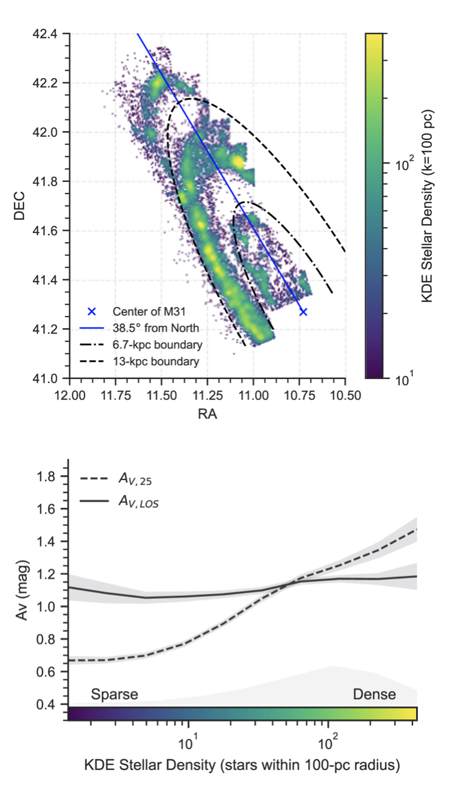

Small-Scale ISM Structure around Massive Stars

Massive stars are significant contributors of ionizing radiation
and momentum, which can destroy surrounding gas in just a few Myrs.
While most massive stars are observed in spiral structures
associated with giant molecular clouds,
we observe that massive stars also exist in the interarm regions of
galaxies like M31, where relatively little star-forming material
is observed at length scales greater than 10 pc.
By comparing the SED-fit line of sight extinction of massive stars
(probing the sub-pc ISM structure) with other general ISM tracers
(25-pc extinction maps, CO, HI), we find massive stars have
on average the same amount of extinction at small scales,
regardless of their location within a galaxy, indicating that
even at 25-pc, we are still not capable of resolving star-forming ISM structures.
Relevant paper: Lindberg, Murray, Dalcanton, et al. 2024, ApJ
The entire catalog of 40,000 massive star candidates from the PHAT footprint can be downloaded from MAST.